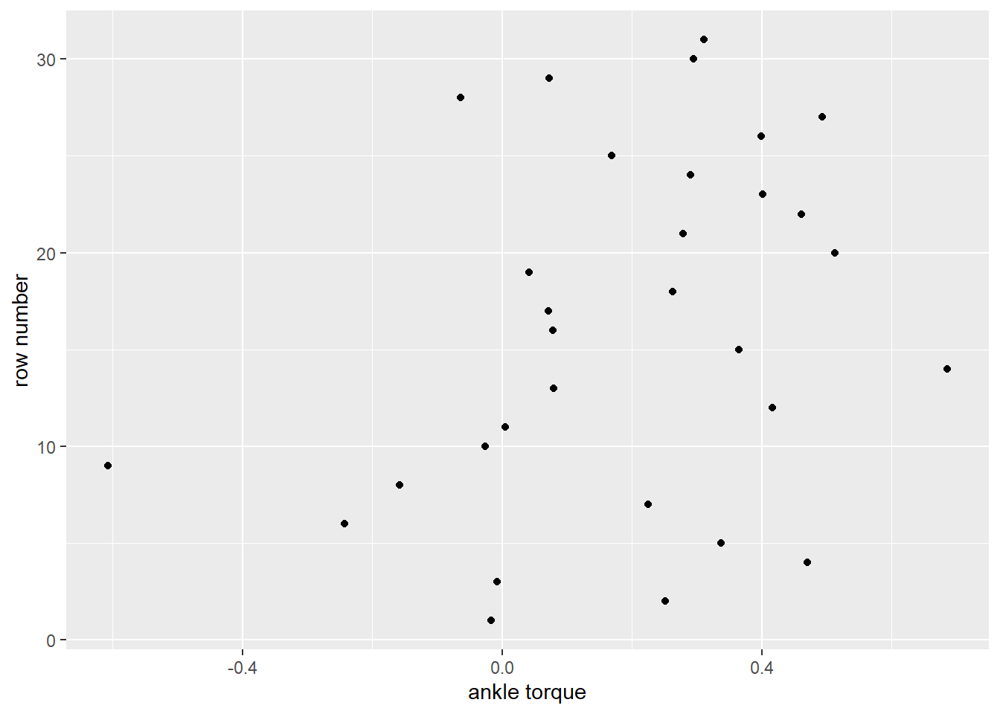
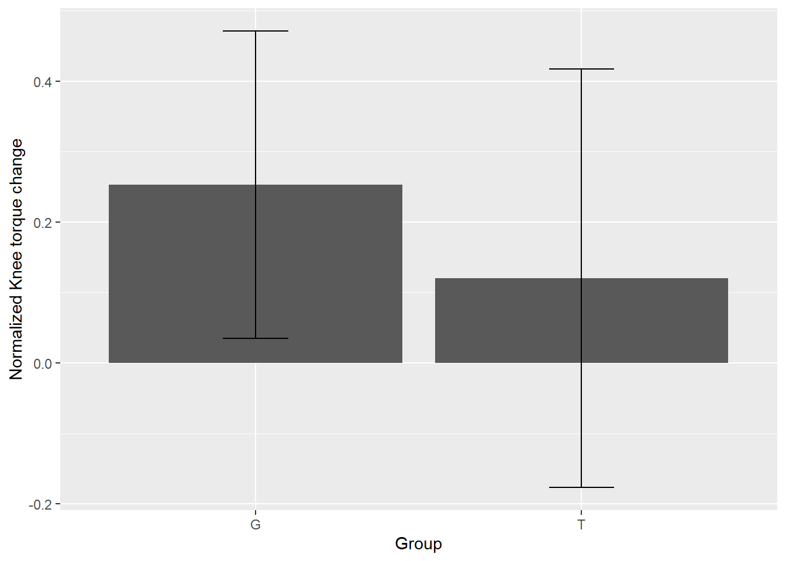
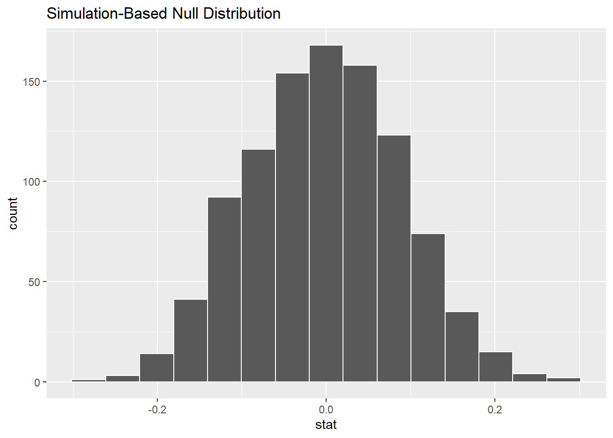
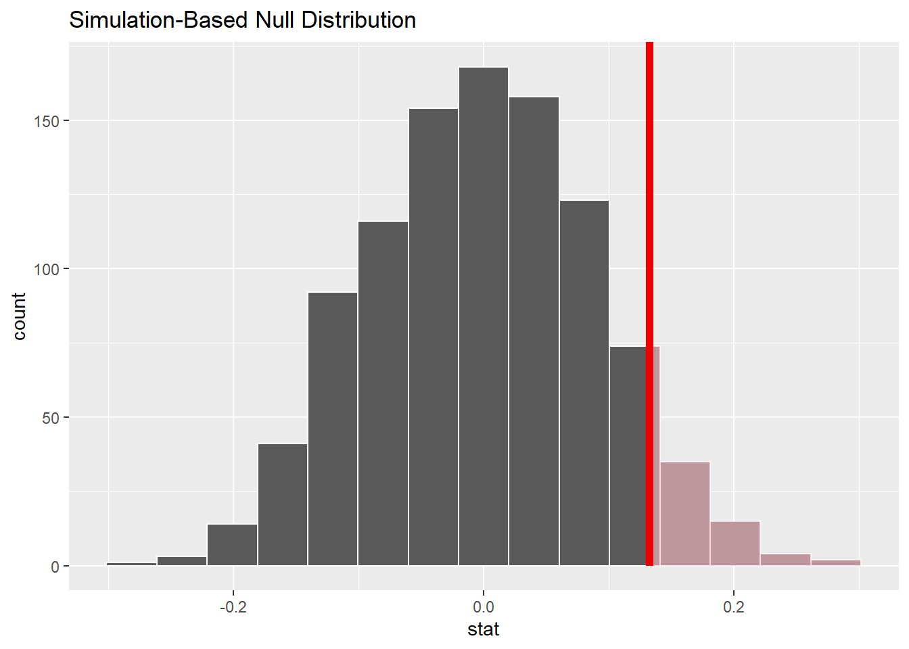
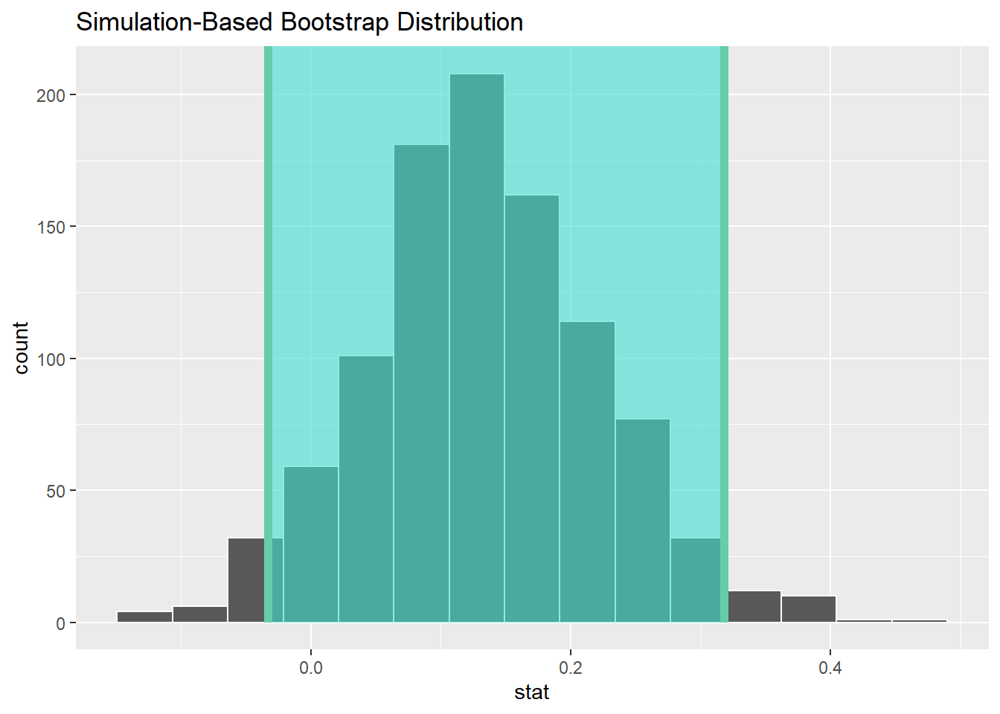

Chapter 13 Is knee strength change over time between two groups different
Download and load libraries
Import data
subjdat <- read_delim (file = "data/SubjectData.txt", # file name placed into a folder called data
delim = "\t", # file separater
col_names = TRUE) # the first row of the data is a header row
scalfac <- read_delim (file = "data/ScaleFact.txt", # file name
delim = "\t", # file separater
col_names = TRUE) # the first row of the data is a header row
strn <- read.xlsx (xlsxFile = "data/STRENGTH.xlsx")13.1 Data manipulation
I need a dataframe which contains the subject identifier, time, group, and knee strength kexttorq which is normalized to each participant’s body mass.
- Convert all colnames to lower cases. Rationale: Simply to make my life easier.
- Check column names for each dataframe. Rationale: I want to combined the two dataframes of
strnandsubjdat, and I need to make sure that the common columns are identically labelled.
## [1] "subj" "group" "time" "side" "set" "rep"
## [7] "aexttorq" "aextwork" "aextpow" "kexttorq" "kextwork" "kextpow"## [1] "subj" "group" "age"
## [4] "wt" "ht" "bmi"
## [7] "runexp " "runfreq6wks" "runfreq12mths"
## [10] "rundistwkly6wks" "rundistwkly12mths" "loadrunexp"
## [13] "runload" "hxload" "wttrainfreq6wks"
## [16] "wttrainfreq12mths" "wttrainstatus"- Keep the columns you want by creating two additional objects
# I need subj, and body mass from the subjdat dataframe
subjdat.sub <- subjdat %>%
select (subj, wt)
# I need subj, time, group, side and kexttorq from the strn dataframe
strn.sub <- strn %>%
select (subj, time, group, side, set, rep, kexttorq)
new.df <- strn.sub %>%
inner_join(subjdat.sub, by = c("subj"))
head (new.df)## subj time group side set rep kexttorq wt
## 1 1 PRE G R 1 1 111 82.26
## 2 1 PRE G R 1 2 137 82.26
## 3 1 PRE G R 1 3 160 82.26
## 4 1 PRE G R 1 4 137 82.26
## 5 1 PRE G R 2 1 160 82.26
## 6 1 PRE G R 2 2 163 82.26- Divide
kexttorqbywtto get normalized knee strength
- Because I am interested in the change in
kexttorq.normbetweenPREandPOST, I need to take create two variables ->kexttorq.norm.preandkexttorq.norm.post. To make life simpler, I will create onekexttorq.normvalue for each subject at each time point.
new.df <- new.df %>%
group_by (subj, time, group) %>%
summarize (ktorq.norm = mean (ktorq.norm)) %>%
ungroup()## `summarise()` regrouping output by 'subj', 'time' (override with `.groups` argument)## # A tibble: 6 x 4
## subj time group ktorq.norm
## <dbl> <chr> <chr> <dbl>
## 1 1 POST G 1.83
## 2 1 PRE G 1.85
## 3 2 POST G 2.61
## 4 2 PRE G 2.36
## 5 3 POST T 1.43
## 6 3 PRE T 1.44- I will than spread the data to make it wide.
## # A tibble: 6 x 4
## subj group POST PRE
## <dbl> <chr> <dbl> <dbl>
## 1 1 G 1.83 1.85
## 2 2 G 2.61 2.36
## 3 3 T 1.43 1.44
## 4 4 G 1.83 1.36
## 5 5 T 2.09 1.75
## 6 6 T 2.26 2.50- I want to create a new variable that is the difference in
kexttorq.normwhich isPOSTstrength minusPREstrength
## # A tibble: 6 x 5
## subj group POST PRE diff
## <dbl> <chr> <dbl> <dbl> <dbl>
## 1 1 G 1.83 1.85 -0.0175
## 2 2 G 2.61 2.36 0.251
## 3 3 T 1.43 1.44 -0.00829
## 4 4 G 1.83 1.36 0.470
## 5 5 T 2.09 1.75 0.337
## 6 6 T 2.26 2.50 -0.242- Let’s get some summary statistics per group.Can you guess if
diffis different in groupGcompared toT?
# grouped summaries
new.df %>%
group_by(group) %>%
summarize (Mean = mean (diff, na.rm = T),
Median = median (diff, na.rm = T),
Max = max (diff, na.rm = T),
Min = min (diff, na.rm = T),
Sd = sd (diff, na.rm = T),
Iqr = IQR (diff, na.rm = T),
quant25 = quantile (diff, probs = 0.25, na.rm = T),
quant75 = quantile (diff, probs = 0.75, na.rm = T))## `summarise()` ungrouping output (override with `.groups` argument)## # A tibble: 2 x 9
## group Mean Median Max Min Sd Iqr quant25 quant75
## <chr> <dbl> <dbl> <dbl> <dbl> <dbl> <dbl> <dbl> <dbl>
## 1 G 0.253 0.271 0.685 -0.158 0.218 0.329 0.0765 0.405
## 2 T 0.120 0.0793 0.494 -0.607 0.297 0.368 -0.0173 0.351- Visualize the individual points of the data, so I will create a cleaveland dotplot
ggplot(data = new.df) +
geom_point(aes(y = seq(1,nrow(new.df),1), x = diff)) +
ylab ("row number") + # Label as you like
xlab ("ankle torque") # Label as you like
- Create a bar plot with error bars to see if differences stand out already.
# generate a summarized dataframe
df.plot = new.df %>%
group_by(group) %>%
summarize (Mean = mean (diff, na.rm = T),
Sd = sd (diff, na.rm = T)) %>%
ungroup()
# Combined plot
ggplot(data = df.plot) +
geom_bar (aes(y = Mean, x = group), stat = "identity") +
geom_errorbar(aes(ymin=Mean -Sd, ymax=Mean +Sd, x = group),
width=.2) +
ylab ("Normalized Knee torque change") +
xlab ("Group")

Figure 13.1: ankle torque by group
13.2 Hypothesis testing
- Get the null distribution in a world where two groups have identical change in knee strength
null_distribution <-new.df %>%
specify (formula = diff ~ group)%>%
hypothesize(null = "independence") %>%
generate(reps = 1000, type = "permute") %>%
calculate(stat = "diff in means", order = c("G", "T"))
head (null_distribution)## # A tibble: 6 x 2
## replicate stat
## <int> <dbl>
## 1 1 -0.0619
## 2 2 0.0238
## 3 3 -0.0718
## 4 4 -0.0197
## 5 5 0.111
## 6 6 0.0926- Get the observed difference in change in strength between two groups
obs_diff <-new.df %>%
specify (formula = diff ~ group)%>%
calculate(stat = "diff in means", order = c("G", "T"))
obs_diff## # A tibble: 1 x 1
## stat
## <dbl>
## 1 0.132- visualize the p-value

visualize(null_distribution, binwidth = 0.05)+
shade_p_value(obs_stat = obs_diff, direction = "greater")
Get the p-value
## # A tibble: 1 x 1
## p_value
## <dbl>
## 1 0.063- Calculate the mean difference in change in strength between the two groups and its confidence interval.
bootstrap_distribution <- new.df %>%
specify (formula = diff ~ group)%>%
generate(reps = 1000, type = "bootstrap") %>% # change this from permute to bootstreap
calculate(stat = "diff in means", order = c("G", "T"))get the CI
percentile_ci <- bootstrap_distribution %>%
get_confidence_interval(level = 0.95, type = "percentile")
percentile_ci## # A tibble: 1 x 2
## lower_ci upper_ci
## <dbl> <dbl>
## 1 -0.0331 0.318